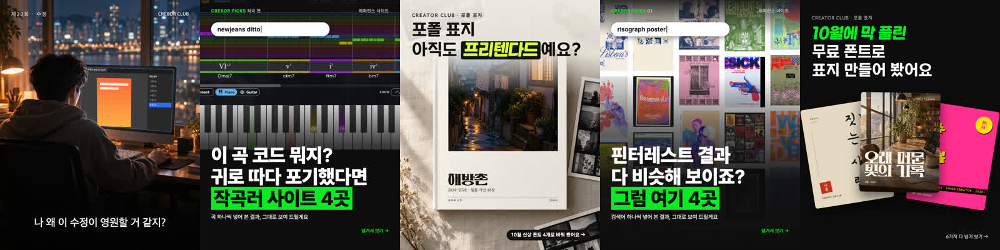

왜 우리 시안은 LLM처럼 보일까
AI를 썼느냐가 아니에요. 우리는 매번 AI가 짠 틀을 그대로 내고, 저 계정들은 사람이 정한 틀 안에 AI를 도구로만 넣어요.
우리 첫 장 다섯

밈 · 작곡 편 · 표지 v3 · PICKS 01 · 신상 폰트 v2 — 다섯 장 모두 「작은 라벨 + 질문형 큰 제목 + 초록 박스 + 부제 + 넘겨서 보기」
세 계정에서 본 것 (첫 장 18개, 11/5)
- 룩스 19.5만 — 사진·브랜드 원본 한 장 꽉 + 위 가운데 LUX 로고 하나. 출처는 캡션에(「썸네일 출처 | Pinterest」). 말투는 늘 「에디터는…」. 피그마 마케팅 좋아요 1,335·댓글 8
- 채은 1,824 — 휴대폰 도쿄 사진 그대로, 스티커 하나. 「여기 모카가 제일 맛있뜸 ..🤌✨」 알록달록 도쿄 926·0
- 아드리아나 비타 9,988 — 직접 그린 캐릭터 룰루가 매번 나옴, 검정·빨강·분홍만. AI는 대놓고 씀: 「Express did 90% of this poster. The other 10% is why it's mine.」 교수 한마디 고백 202·79
LLM처럼 보이는 이유 다섯
- 다섯 장이 같은 카드뉴스 틀 — AI에게 「인스타 캐러셀」 시키면 나오는 정답 모양. 저쪽 첫 장 글자 덩어리는 0~1개.
- 그림이 평균값 — 따뜻한 조명, 무난한 구도. 저쪽은 흠이 있거나(흔들린 사진) 주인이 있음(손 그림, 브랜드 원본).
- 글이 카피 공식 — 「~했다면」「아직도 ~예요?」「여기 4곳」. 저쪽은 혼잣말.
- 말하는 사람이 없음 — 에디터·채은·룰루 같은 얼굴이 없음.
- 회차마다 틀을 바꿔도 표면은 늘 검정+초록 박스 — 안정적인 계정은 규칙 두세 개를 못 박고 내용만 바꿈.
감도 올리는 순서 (추천)
- 글자 박스 버리기 — 첫 장은 그림 한 장 + 작은 로고
- 주인 있는 그림만 — 회원 작업(동의)·실제 사진·브랜드 원본
- 화자 한 명 정하기 — 방향 정하기 질문과 같이
- 못 박을 규칙 셋(로고 자리·사진 출처·글자 한 가지)
못 본 것: 캐러셀 안쪽 장과 릴스 영상. 남의 그림은 다시 올리지 않고 링크만 걸었어요.